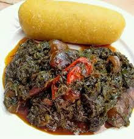

Eru

Description
Eru is a traditional dish from Cameroon, made with the leaves of the Eru plant (Gnetum africanum). The leaves are rich in nutrients and are often cooked with a variety of meats, fish, and spices to create a flavorful and hearty stew. Eru is typically served with fufu or rice, making it a popular choice for family meals and special occasions.
It is known for its unique flavor and is often enjoyed during festive gatherings.
Ingredients
- Eru leaves (Gnetum africanum) – finely chopped
- Meat (beef, chicken, or fish) – cut into pieces
- Groundnut (peanut) paste – for richness
- Onion – chopped
- Garlic – minced
- Seasoning cubes – to taste
- Salt and pepper – to taste
Steps
- Prepare the Eru Leaves: Rinse the Eru leaves thoroughly and chop them finely.
- Cook the Meat: In a pot, add the meat and enough water to cover it. Season with salt and pepper, and cook until tender.
- Sauté the Aromatics: In a separate pan, heat some oil and sauté the chopped onions and minced garlic until fragrant.
- Combine Ingredients: Add the sautéed aromatics to the pot with the meat. Stir in the groundnut paste and mix well.
- Add the Eru Leaves: Gently fold in the chopped Eru leaves and let the stew simmer for a few minutes until the leaves are tender.